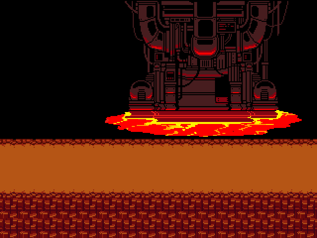

Ruins
As Ruínas é o local onde Undertale Demo é jogado, bem como a primeira região encontrada. O protagonista cai nas Ruínas por uma grande gruta localizada no Monte Ebott. Toriel, uma comunidade de aranhas e muitos outros monstros moram naquele local.
Snowding

Nevada é uma floresta Nevada que o protagonista encontra depois que ele deixa as ruínas. Em Nevada há numerosos membros da Guarda Real, incluindo Sans e os membros caninos, presumivelmente porque os vizinhos da cidade dão a entrada para o subterrâneo, onde os seres humanos caem. A saída da cidade leva o protagonista à Cachoeira a pé, ou pega carona com o barqueiro, para Cachoeira ou HotLand. Apesar de ser subterrâneo, Nevada está coberta de uma camada permanente de gelo e neve e, por causa do frio que os monstros usam roupas grossas.Sans e Papyrus não recebem frio por não terem pele.
Waterfall
Cachoeira é uma localização em Undertale. É o terceiro local explorável do jogo. Cachoeira é a terceira área onde o protagonista encontra. A área é acessível após o protagonista derrotar Papyrus em uma luta. A área segue Floresta de Nevada e Cidade de Nevadae termina em HotLand.
HotLand
